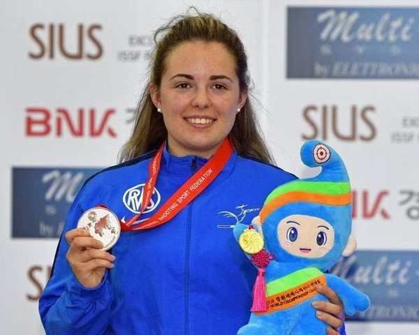
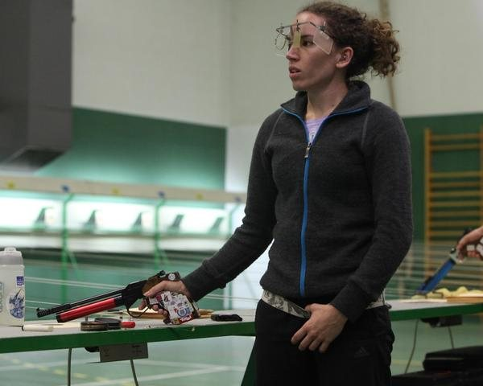
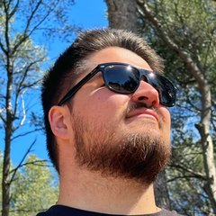
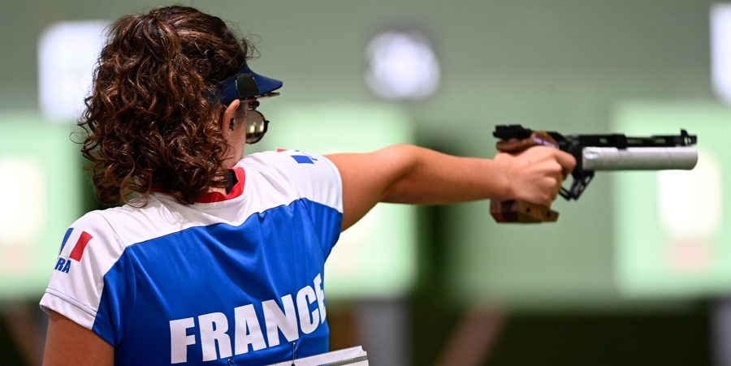

Les entraîneurs que nous connaissons
Ce site ne remplace pas un encadrant. Voici des entraîneurs de tir sportif que l’équipe MonTirSportif connaît, et les diplômes qui permettent d’encadrer.
Pourquoi un entraîneur ?
On peut lire tous les conseils du monde : au pas de tir, personne ne se voit tirer. Un entraîneur, si. Il remarque le poignet qui casse, la tête qui bouge au départ du coup ou le lâcher qui accélère quand la visée devient « belle ». Ce sont des défauts qu’on ne sent pas soi-même, et qui s’installent vite quand on s’entraîne seul.
Un entraîneur vous fait aussi gagner du temps. Il sait par quoi commencer et ce qui peut attendre. Il sait quand insister et quand passer à autre chose. Au lieu d’enchaîner les séances sans fil conducteur, vous suivez un plan adapté à votre niveau et à vos objectifs.
Il est enfin précieux en compétition. Il vous aide à préparer un match, à gérer le stress et à analyser vos résultats sans vous juger trop durement. Les progrès ne se lisent pas qu’au score.
Mon entraîneur
Des pistoliers que nous connaissons personnellement. La liste grandira au fil des rencontres.



Vincent GaffarelGémenos Tir Sportif (13) · pistolet.Tireur de l’équipe pistolet du club au championnat de France des clubs 10 m et en division 1.Entraîneur brevet fédéral et CQP « Moniteur de tir sportif ».L’équipe technique du club ↗
Les diplômes d’encadrement
La FFTir distingue la filière fédérale (bénévoles) et la filière professionnelle (encadrement rémunéré). Les quatre étapes du club : CAC, BFA, BFI puis BFE, l’entraîneur fédéral.
Filière fédérale · encadrement bénévole
Formations organisées par les ligues (CAC, BFJE, BFA) puis par la FFTir (BFI, BFE, moniteurs). La plupart sont accessibles par la VAE.
Filière professionnelle · encadrement rémunéré
Tutorat et formation continue
À voir aussi sur bensport
Trouver un entraîneur près de chez soi
Demandez à votre club
Chaque club a ses initiateurs et ses entraîneurs. C’est le plus simple pour commencer ou reprendre, avec un suivi régulier.
Pour aller plus loin
Les ligues régionales organisent des stages et des journées de détection. Votre club vous dira lesquels vous conviennent.